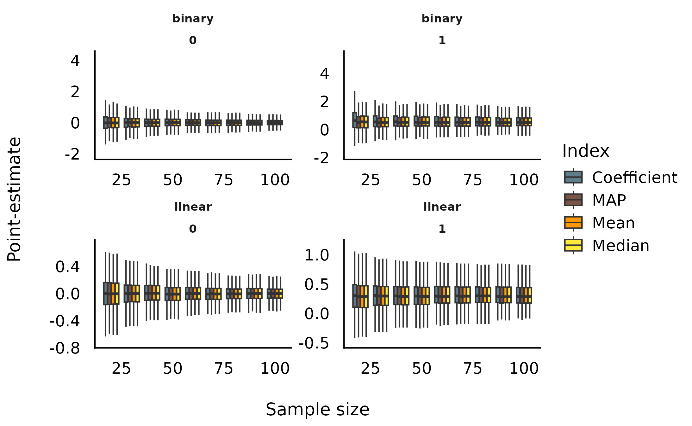
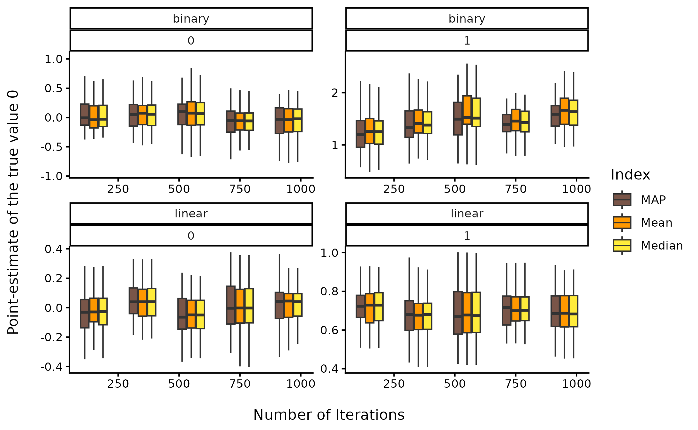
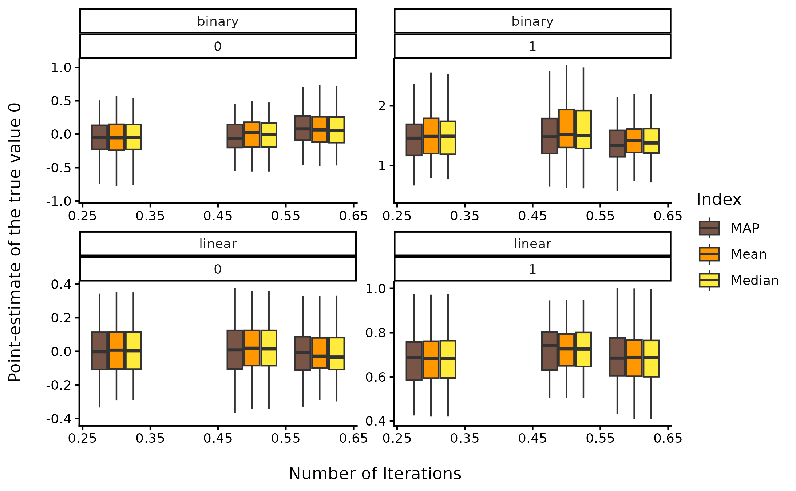

In-Depth 1: Comparison of Point-Estimates
Source:vignettes/web_only/indicesEstimationComparison.Rmd
indicesEstimationComparison.RmdThis vignette can be referred to by citing the package:
- Makowski, D., Ben-Shachar, M. S., & Lüdecke, D. (2019). bayestestR: Describing Effects and their Uncertainty, Existence and Significance within the Bayesian Framework. Journal of Open Source Software, 4(40), 1541. https://doi.org/10.21105/joss.01541
Effect Point-Estimates in the Bayesian Framework
Introduction
One of the main difference between the Bayesian and the frequentist frameworks is that the former returns a probability distribution for each effect (i.e., a model parameter of interest, such as a regression slope) instead of a single value. However, there is still a need and demand - for reporting or use in further analysis - for a single value (point-estimate) that best characterises the underlying posterior distribution.
There are three main indices used in the literature for effect estimation: - the mean - the median - the MAP (Maximum A Posteriori) estimate (roughly corresponding to the mode - the “peak” - of the distribution)
Unfortunately, there is no consensus about which one to use, as no systematic comparison has ever been done.
In the present work, we will compare these three point-estimates of effect with each other, as well as with the widely known beta, extracted from a comparable frequentist model. These comparisons can help us draw bridges and relationships between these two influential statistical frameworks.
Experiment 1: Relationship with Error (Noise) and Sample Size
Methods
We will be carrying out simulation aimed at modulating the following characteristics:
- Model type: linear or logistic.
- “True” effect (known parameters values from which data is drawn): Can be 1 or 0 (no effect).
- Sample size: From 20 to 100 by steps of 10.
- Error: Gaussian noise applied to the predictor with SD uniformly spread between 0.33 and 6.66 (with 1000 different values).
We generated a dataset for each combination of these characteristics,
resulting in a total of 2 * 2 * 9 * 1000 = 36000 Bayesian
and frequentist models. The code used for generation is available here
(please note that it takes usually several days/weeks to complete).
library(ggplot2)
library(datawizard)
library(see)
library(parameters)
df <- read.csv("https://raw.github.com/easystats/circus/main/data/bayesSim_study1.csv")Results
Sensitivity to Noise
dat <- df
dat <- data_select(dat, select = c("error", "true_effect", "outcome_type", "Coefficient", "Median", "Mean", "MAP"))
dat <- reshape_longer(
dat,
select = -c("error", "true_effect", "outcome_type"),
names_to = "estimate",
values_to = "value"
)
dat$temp <- as.factor(cut(dat$error, 10, labels = FALSE))
tmp <- lapply(split(dat, dat$temp), function(x) {
x$error_group <- rep(round(mean(x$error), 1), times = nrow(x))
return(x)
})
dat <- do.call(rbind, tmp)
dat <- data_filter(dat, value < 6)
ggplot(dat, aes(x = error_group, y = value, fill = estimate, group = interaction(estimate, error_group))) +
# geom_hline(yintercept = 0) +
# geom_point(alpha=0.05, size=2, stroke = 0, shape=16) +
# geom_smooth(method="loess") +
geom_boxplot(outlier.shape = NA) +
theme_modern() +
scale_fill_manual(
values = c("Coefficient" = "#607D8B", "MAP" = "#795548", "Mean" = "#FF9800", "Median" = "#FFEB3B"),
name = "Index"
) +
ylab("Point-estimate") +
xlab("Noise") +
facet_wrap(~ outcome_type * true_effect, scales = "free")Sensitivity to Sample Size
dat <- df
dat <- data_select(dat, select = c("sample_size", "true_effect", "outcome_type", "Coefficient", "Median", "Mean", "MAP"))
dat <- reshape_longer(
dat,
select = -c("sample_size", "true_effect", "outcome_type"),
names_to = "estimate",
values_to = "value"
)
dat$temp <- as.factor(cut(dat$sample_size, 10, labels = FALSE))
tmp <- lapply(split(dat, dat$temp), function(x) {
x$size_group <- rep(round(mean(x$sample_size), 1), times = nrow(x))
return(x)
})
dat <- do.call(rbind, tmp)
dat <- data_filter(dat, value < 6)
ggplot(dat, aes(x = size_group, y = value, fill = estimate, group = interaction(estimate, size_group))) +
# geom_hline(yintercept = 0) +
# geom_point(alpha=0.05, size=2, stroke = 0, shape=16) +
# geom_smooth(method="loess") +
geom_boxplot(outlier.shape = NA) +
theme_modern() +
scale_fill_manual(
values = c("Coefficient" = "#607D8B", "MAP" = "#795548", "Mean" = "#FF9800", "Median" = "#FFEB3B"),
name = "Index"
) +
ylab("Point-estimate") +
xlab("Sample size") +
facet_wrap(~ outcome_type * true_effect, scales = "free")
Statistical Modelling
We fitted a (frequentist) multiple linear regression to statistically test the the predict the presence or absence of effect with the estimates as well as their interaction with noise and sample size.
dat <- df
dat <- data_select(dat, select = c("sample_size", "true_effect", "outcome_type", "Coefficient", "Median", "Mean", "MAP"))
dat <- reshape_longer(
dat,
select = -c("sample_size", "error", "true_effect", "outcome_type"),
names_to = "estimate",
values_to = "value"
)
out <- glm(true_effect ~ outcome_type / estimate / value, data = dat, family = "binomial")
out <- parameters(out, ci_method = "wald")
out <- data_select(out, c("Parameter", "Coefficient", "p"))
rows <- grep("^outcome_type(.*):value$", x = out$Parameter)
out <- data_filter(out, rows)
out <- out[order(out$Coefficient, decreasing = TRUE), ]
knitr::kable(out, digits = 2)| Parameter | Coefficient | p | |
|---|---|---|---|
| 14 | outcome_typelinear:estimateMean:value | 10.8 | 0 |
| 16 | outcome_typelinear:estimateMedian:value | 10.8 | 0 |
| 12 | outcome_typelinear:estimateMAP:value | 10.7 | 0 |
| 10 | outcome_typelinear:estimateCoefficient:value | 10.5 | 0 |
| 11 | outcome_typebinary:estimateMAP:value | 4.4 | 0 |
| 15 | outcome_typebinary:estimateMedian:value | 4.3 | 0 |
| 13 | outcome_typebinary:estimateMean:value | 4.2 | 0 |
| 9 | outcome_typebinary:estimateCoefficient:value | 3.9 | 0 |
This suggests that, in order to delineate between the presence and the absence of an effect, compared to the frequentist’s beta coefficient:
- For linear models, the Mean was the better predictor, closely followed by the Median, the MAP and the frequentist Coefficient.
- For logistic models, the MAP was the better predictor, followed by the Median, the Mean and, behind, the frequentist Coefficient.
Overall, the median appears to be a safe choice, maintaining a high performance across different types of models.
Experiment 2: Relationship with Sampling Characteristics
Methods
We will be carrying out another simulation aimed at modulating the following characteristics:
- Model type: linear or logistic.
- “True” effect (original regression coefficient from which data is drawn): Can be 1 or 0 (no effect).
- draws: from 10 to 5000 by step of 5 (1000 iterations).
- warmup: Ratio of warmup iterations. from 1/10 to 9/10 by step of 0.1 (9 iterations).
We generated 3 datasets for each combination of these
characteristics, resulting in a total of
2 * 2 * 8 * 40 * 9 * 3 = 34560 Bayesian and frequentist
models. The code used for generation is avaible here
(please note that it takes usually several days/weeks to complete).
df <- read.csv("https://raw.github.com/easystats/circus/main/data/bayesSim_study2.csv")Results
Sensitivity to number of iterations
dat <- df
dat <- data_select(dat, select = c("iterations", "true_effect", "outcome_type", "beta", "Median", "Mean", "MAP"))
dat <- reshape_longer(
dat,
select = -c("iterations", "true_effect", "outcome_type"),
names_to = "estimate",
values_to = "value"
)
dat$temp <- as.factor(cut(dat$iterations, 5, labels = FALSE))
tmp <- lapply(split(dat, dat$temp), function(x) {
x$iterations_group <- rep(round(mean(x$iterations), 1), times = nrow(x))
return(x)
})
dat <- do.call(rbind, tmp)
dat <- data_filter(dat, value < 6)
ggplot(dat, aes(x = iterations_group, y = value, fill = estimate, group = interaction(estimate, iterations_group))) +
geom_boxplot(outlier.shape = NA) +
theme_classic() +
scale_fill_manual(
values = c("beta" = "#607D8B", "MAP" = "#795548", "Mean" = "#FF9800", "Median" = "#FFEB3B"),
name = "Index"
) +
ylab("Point-estimate of the true value 0\n") +
xlab("\nNumber of Iterations") +
facet_wrap(~ outcome_type * true_effect, scales = "free")
Sensitivity to warmup ratio
dat <- df
dat$warmup <- dat$warmup / dat$iterations
dat <- data_select(dat, select = c("warmup", "true_effect", "outcome_type", "beta", "Median", "Mean", "MAP"))
dat <- reshape_longer(
dat,
select = -c("warmup", "true_effect", "outcome_type"),
names_to = "estimate",
values_to = "value"
)
dat$temp <- as.factor(cut(dat$warmup, 3, labels = FALSE))
tmp <- lapply(split(dat, dat$temp), function(x) {
x$warmup_group <- rep(round(mean(x$warmup), 1), times = nrow(x))
return(x)
})
dat <- do.call(rbind, tmp)
dat <- data_filter(dat, value < 6)
ggplot(dat, aes(x = warmup_group, y = value, fill = estimate, group = interaction(estimate, warmup_group))) +
geom_boxplot(outlier.shape = NA) +
theme_classic() +
scale_fill_manual(
values = c("beta" = "#607D8B", "MAP" = "#795548", "Mean" = "#FF9800", "Median" = "#FFEB3B"),
name = "Index"
) +
ylab("Point-estimate of the true value 0\n") +
xlab("\nNumber of Iterations") +
facet_wrap(~ outcome_type * true_effect, scales = "free")
Discussion
Conclusions can be found in the guidelines section article.
Suggestions
If you have any advice, opinion or such, we encourage you to let us know by opening an discussion thread or making a pull request.